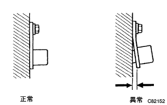
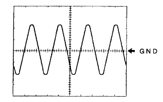
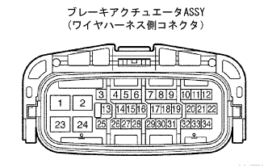

DTC C0200/31 Speed Sensor FR system |
DTC C0205/32 Speed Sensor FL system abnormalities |
DTC C0210/33 Speed Sensor RR system abnormalities |
DTC C0215/34 Speed Sensor RL system abnormalities |

| DTC No. | DTC detection conditions | DTC output -related items |
|---|---|---|
| C0200/31 C0205/32 C0210/33 C0215/34 |
|
|
| Step 1 | ECU data monitor inspection (instantaneous (speed sensor)) |
Use SST (Tascan) to check the instantaneous disconnection of the wire harness of the speed sensor that falls into the abnormal code.(The point isreference)
|
| ||||
| OK | |
| Step 2 | ECU data monitor inspection (speed sensor) |
Use SST (Tascan) to check the output value of the wheel speed sensor corresponding to the abnormal code.(The point isreference)
|
| ||||
| NG | |
| Step 3 | Speed sensor inspection |
|  |
Inspect the installation status of the speed sensor.
|
| ||||
| OK | |
| Step 4 | Speed sensor alone inspection |
Inspect that there is no defect such as loosening and omission in the connector of the speed sensor.
Cut the speed sensor connector.
Inspect that there is no deformation or corrosion in the connector case and terminal.
Use SST (Toyota Electrical Tester) to check the resistance between the connector terminals.
| front | Rear |
|---|---|
| 1.6 ± 0.2kΩ (at 20 ° C) Reference value: 0.6-2.5kΩ (-40-120 ° C) | 1.25 ± 0.2kΩ (at 25 ± 5 ° C) Reference value: 0.8-2.05kΩ (-40-120 ° C) |
Use SST (Toyota Electrical Tester) to inspect the resistance between the connector terminal and the body earth.
| A | OK |
| B | NG (Speed Sensor FR RH) |
| C | NG (Speed Sensor FR LH) |
| D | NG (Speed Sensor RR RH) |
| E | NG (Speed Sensor RR LH) |
|
| ||||
|
| ||||
|
| ||||
|
| ||||
| A | |
| Step 5 | Wire harness and connector inspection (Speed Sensor-Actuator ASSY) |
Confirm that the speed sensor connector is connected.
Inspect that there is no defect such as loosening and omission in the connector of the brake actuator asser Assembly.
Turn off the IG switch and disconnect the brake actuator asser ASSY connector.
Inspect that there is no deformation or corrosion in the connector case and terminal.
Use SST (Toyota Electrical Tester) to inspect the resistance between the wire harness side connectors of the actuator ASSY and the insulation with the body ground.
| Inspection terminal | Resistance value |
|---|---|
| 31 (FR+) ← → 30 (FR-) 9 (FL+) ← → 8 (FL-) | 1.6 ± 0.2kΩ (at 20 ° C) Reference value: 0.6-2.5kΩ (-40-120 ° C) |
| 33 (RR+) ← → 34 (RR-) 11 (RL+) ← → 12 (RL-) | 1.25 ± 0.2kΩ (at 25 ± 5 ° C) Reference value: 0.8-2.05kΩ (-40-120 ° C) |
| Inspection terminal | Condolence |
|---|---|
| 31 (FR+), 30 (FR-), 9 (FL+), 8 (FL-), 33 (RR+), 34 (RL-), 11 (RL+), 12 (RL-) ← → Body Earth | Without conduction |
|
| ||||
| OK | |
| Step 6 | Speed sensor output waveform inspection |
Using the oscilloscope function of SST (TASCAN), the actuator asser Assembly Wire harness side connector of the wire harness side of the actuator Assembly 31 (FR+) ← → 30 (FL+) ← → 8 (FL-), 33 (RR+) ← →34 (RR-), 11 (RL+) ← → 12 (RL-) Check the waveform between the terminals.
|  |
Osciroscope waveform
|
| ||||
| OK | |
| Step 7 | Diagnostic code erasure |
Erase the diagnostic cord.(The point isreference)
| GO | |
| Step 8 | Diagnostic code reconfirmation |
Perform the driving test and reconfirm the diagnostic code.(The point isreference)
|
| ||||
| OK | ||
| ||
| Step 9 | Test mode inspection (speed sensor system) |
Check the test mode and check the test mode code and the diagnostic code.(The point isreference)
|
| ||||
| OK | |
| Step 10 | Speed sensor output waveform inspection |
|  |
Using the oscilloscope function of SST (TASCAN), the actuator asser Assembly Wire harness side connector of the wire harness side of the actuator Assembly 31 (FR+) ← → 30 (FL+) ← → 8 (FL-), 33 (RR+) ← →34 (RR-), 11 (RL+) ← → 12 (RL-) Check the waveform between the terminals.
Osciroscope waveform
|
| ||||
| OK | ||
| ||
| Step 11 | Wire harness and connector repair or replacement |
Repair or replace the wire harness or connector in the site where the instant interruption has been detected.
Again, use SST (Tascan) to check the instant interruption on the data monitor to confirm that there is no instantaneous interruption.(The point isreference)
| GO | |
| Step 12 | Diagnostic code erasure |
Erase the diagnostic cord.(The point isreference)
| GO | |
| Step 13 | Diagnostic code reconfirmation |
Perform a driving test and output the diagnostic code again.(The point isreference)
|
| ||||
| OK | ||
| ||